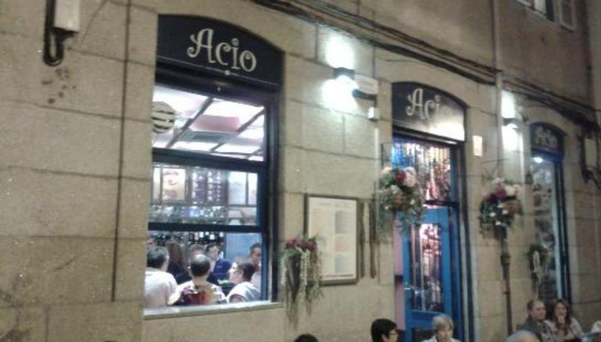

Alrededores del piso
Descubre las numerosas actividades que se pueden realizar durante tu estancia en el piso de San Pedro.

Dónde comer

Senderismo y bicicleta

Rutas a caballo

Rutas en quad

Rutas náuticas y rafting

Rutas en playas fluviales

Termas

Villas y ferias